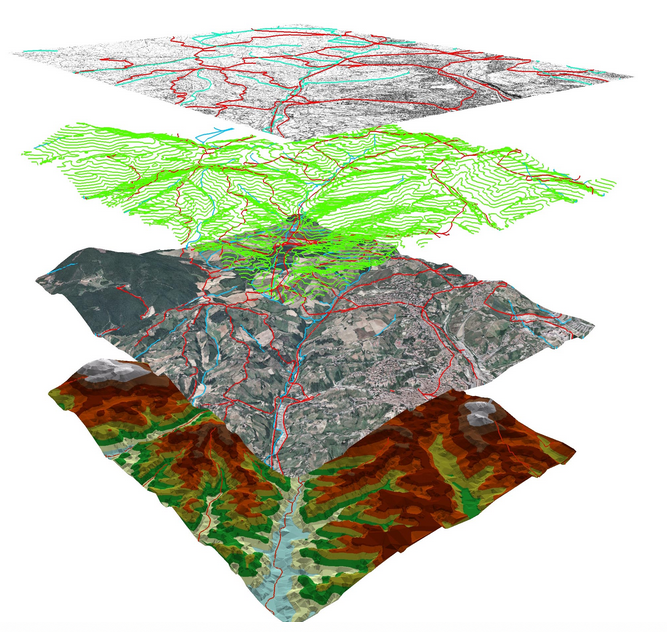
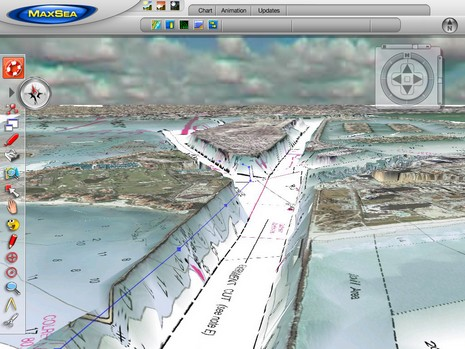
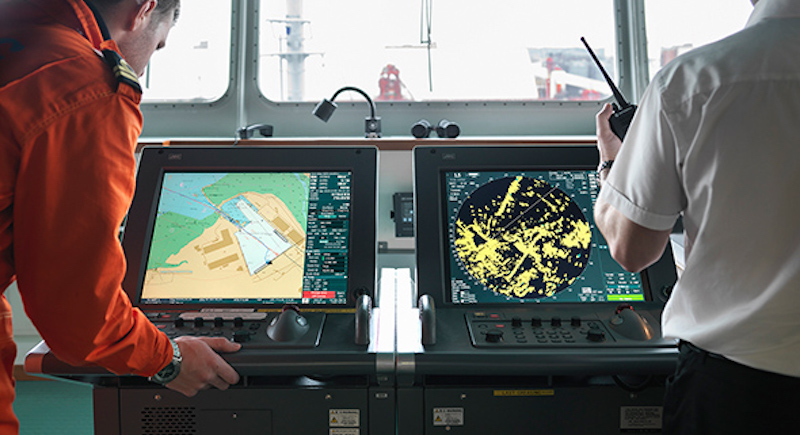
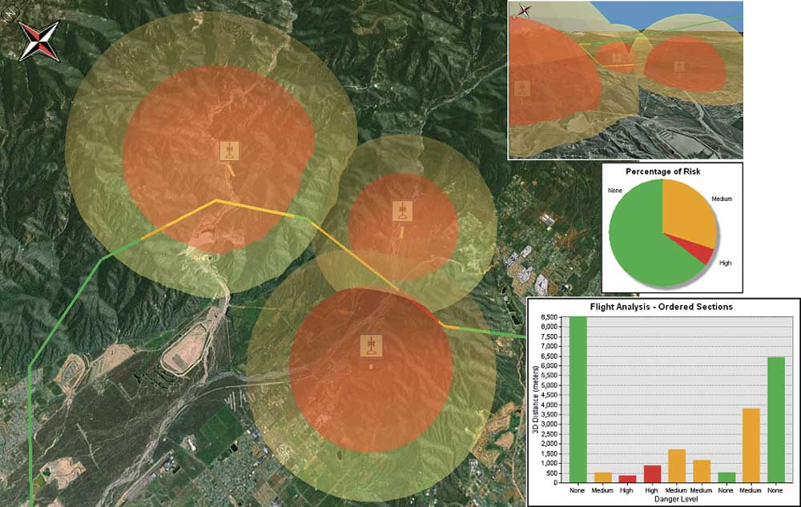

W wojsku GIS 3D jest wykorzystywany na wiele sposobów między innymi podczas zarządzania operacjami i obiektami, do ochrony i bezpieczeństwa, planowania misji oraz przy analizie terenu. Określenie zakresu obserwacji oraz badania danego obszaru lub konkretnego pola, na którym będą przeprowadzane działania nazywamy „rekonesansem”. Za pomocą rożnych metod detekcji lub analiz można uzyskać potrzebne nam informacje odnoszące się do geolokalizacji i związanych z tym elementów.
Wszystkie dane geoprzestrzenne oraz wyniki analiz można przedstawić w przestrzeni trójwymiarowej, pozwala to na dokładniejsze zapoznanie z terenem, na którym działania wojskowe będą przeprowadzane. Wykorzystanie tego typu oprogramowania w znacznym stopniu może obniżyć koszty na rzecz poprawy efektywności misji oraz zapewnia dokonywania szybkich możliwości modelowania w celu zaproponowania alternatywnych strategii oraz podejmowania właściwych decyzji.
Celem pracy jest opracowanie wirtualnego rekonesansu terenowego placu ćwiczeń taktycznych z uwzględnieniem realizacji działań taktycznych w środowisku zurbanizowanym. Zadanie opierało się na geowizualizacji 3D obszaru zainteresowania oraz zademonstrowania wykorzystania tej formy prezentacji kartograficznej. Rekonesans polega na zdobywaniu cennych informacji na temat terenu, rozpoznania wrogich stanowisk i sił przeciwnika oraz dokonanie elementarnych pomiarów i obliczeń terenu. Wygenerowany model 3D wraz z przeprowadzonymi analizami ma pozwolić użytkownikowi zdobyć wyżej wymienione informacje i podjąć decyzje w zależności od charakteru działań i postaci w jakiej model zostanie przedstawiony.
Integracja danych z różnych źródeł
Dowódcy na wszystkich poziomach dowodzenia potrzebują wspólnego poglądu
bitew, które są w stanie zintegrować wszystkie
informacje ,w łatwym do interpretacji interfejsie.
Ewaluacja terenu w operacjach wojskowych na lądzie powoduje, żę dowódcy polowi chcieliby poznać warunki terenowe, wzniesienia manewrowe dla nośników pancerza, czołgów i różnych rodzajów broni. Ponadto potrzebują oni pokrycia roślinności, sieci dróg i linii komunikacyjnych z dokładnością wskazywania target'ów w celu optymalizacji wykorzystania zasobów. Szczegółowa mapa terenu z informacjami o użytkowaniu gruntów, modelu terenu i pobliskich siedliskach ma zasadnicze znaczenie dla operacji wojskowych. Wszystkie te szczegóły muszą być dostępne dla dowódców w układzie odniesienia, w celu dopasowania ich do wyposażenia używanego do ustalania pozycji i komunikacji w obszarze działania. Wszelkie rozbieżności w tych danych wejściowych mogą zagrozić operacji. Ocena celu może być wykonana, jeśli dane wejściowe są odpowiednio dopasowane do systemu użytego do wystrzelenia broni.Inne czynniki takie jak zmienność magnetyczna, informacje grawitacyjne są wymagane w przypadku wrażliwych operacji wojskowych.
Wyświetlanie danych przestrzennych, których największymi potencjalnymi użytkownikami GIS są dowódcy. Potrzebują dostępu do geograficznego obrazu, mapy lub zdjęcia, aby pomóc i ocenić sytuację w celu przeprowadzenia planowanych operacji. Wcześniejsze pakiety GIS miały charakter zastrzeżony i ograniczały wykorzystanie danych w ograniczonych specyfikacjach. Kompleksowa baza danych na wiele typów integracji, które danych wymagają otwartego podejścia GIS. Otwarte podejście GIS umożliwia indywidualnym użytkownikom wybór najbardziej odpowiedniego produktu, a jednocześnie obsługuje wymagania dotyczące poleceń, aby określić autoryzowaną mapę ze względów operacyjnych.

Przykład wykonanej analizy
Kolejną możliwością, którą zapewnia wymiar 3D jest wizualizacja zasięgów różnych środków ogniowych w tym przypadku wzięto pod lupę polską broń etatową, która obecnie znajduje się na wyposażeniu wojska polskiego, 5,56mm karabinek szturmowy Beryl wz.96.
Zasięg maksymalny tej broni wynosi 3km, w analizie uwzględniono tylko zasięg skuteczny, który wynosi 500m. Stanowisko ogniowe umiejscowiono na placu ćwiczeń taktycznych, po czym wygenerowano buffor o zasięgu 500 m,któremu nadano przezroczystość 50% w celu ukazania jaki obszar obejmuje.
Operacje marynarki morskiej okręty marynarki wojennej w dużej mierze opierają się na ekstrapolatywnych metodach nawigacji, gdy nie ma możliwości ustalenia pozycji przy pomocy wizualnych metod. Globalny System Pozycjonowania (GPS) umożliwia określenie pozycji na morzu. Echosonda zapewnia pomiar głębokości wody. Statki morskie działają na morzu za pomocą kilku elektronicznych gadżetów. Na morzu cechy naturalne, takie jak prądy, warunki falowania, temperatury i pływy na powierzchni morza mogą czasami zniechęcić do operacji morskich. Dokładne zrozumienie złożonej dynamiki oceanu jest niezbędnym elementem udanych operacji morskich.

Niedawne wprowadzenie elektronicznego systemu wyświetlania map i informacji (ECDIS) pomaga bezpiecznie poruszać się po statku w każdych warunkach pogodowych. Elektroniczna karta nawigacyjna (ENC) zastępuje konwencjonalny papierowy wykres, który jest używany jako narzędzie do nawigacji, zapewniające szczegółowe informacje o głębokości, zagrożeniach i pomocach nawigacyjnych w danym obszarze. Obsługiwane przez alarmy wizualne i dźwiękowe ECDIS zapewniają nawigatorowi na mostku wystarczające środki do bezpiecznej nawigacji statku. Wyświetlacz służy do dostarczania nawigatorowi informacji selektywnych lub przestrzennych w celu bezpiecznego przejścia. ENC jest bazą danych dla operacji GIS, a ECDIS jest aplikacją GIS w czasie rzeczywistym w środowisku morskim.

Ponadto system ECDIS może być wykorzystywany do innych operacji morskich przy użyciu dodatkowych warstw informacji związanych z warunkami oceanograficznymi i meteorologicznymi w celu zapewnienia środków dla operacji morskich, takich jak zagrożęnie ze strony okrętów podwodnych lub lądowanie na plaży sił zbrojnych w operacjach wojskowych. NATO standaryzuje dodatkowe warstwy wojskowe do wykorzystania w operacjach wykorzystujących bazę danych ENC jako dane podstawowe w połączeniu z pokładowym systemem ECDIS.
Wykorzystanie ECDIS ogranicza się jednak do nawigacji, a większość krajów przestawia się na produkcję ENC swoich wód, co samo w sobie jest bardzo ukierunkowane na inwestycje. Przewiduje się, że za pięć lat uwaga będzie zwrócona na wykorzystanie ENC z dodatkowymi warstwami dla zastosowań wojskowych i naukowych.
Operacje lotnicze,wszystkie operacje w środowisku bitewnym wymagają podobnych danych wejściowych, jak operacje na lądzie, a także dokładnych informacji o wysokości ,w celu poprawnego sterowania. Obejmują one szczegółowe informacje na temat docelowej lokalizacji, bliskości obszarów cywilnych, oceny terenu i warunków meteorologicznych oprócz danych nawigacyjnych. Koncepcje rzeczywistości wirtualnej są bardziej pomocne w samolotach myśliwskich i bombardujących dla skutecznych operacji uderzeniowych.

Przywódcy wojskowi w dużym stopniu polegają na systemach GIS i GPS (Global Positioning Systems), aby podejmować taktyczne decyzje, takie jak kierowanie oddziałami, zaopatrzeniem / sprzętem i statkami, informowanie ich o możliwych zagrożeniach, problemach z ukształtowaniem terenu, a także kierowanie uwagi na określone obszary zainteresowań. Na przykład, dane są przesyłane do kokpitu w odniesieniu do samolotu szturmowego, dostarczając pilotowi potrzebnych informacji, takich jak lokalizacja celu oraz jego identyfikacja, plus ewentualne punkty zagrożenia, w których mogą napotkać atak na siebie. Piloci ci otrzymują również dane na temat informacji meteorologicznych, które zwiększają widoczność i ostrzegają przed możliwą zmianą, która może wystąpić podczas lotu.
GIS stanowi poważne wyzwanie dla wojska oraz
programistów. Wiele problemów jest unikalnych dla
wojskowa i wymagają innowacyjnych rozwiązań.